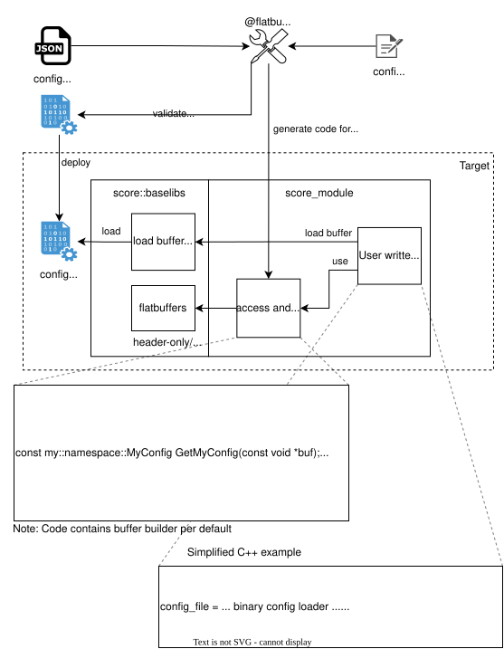
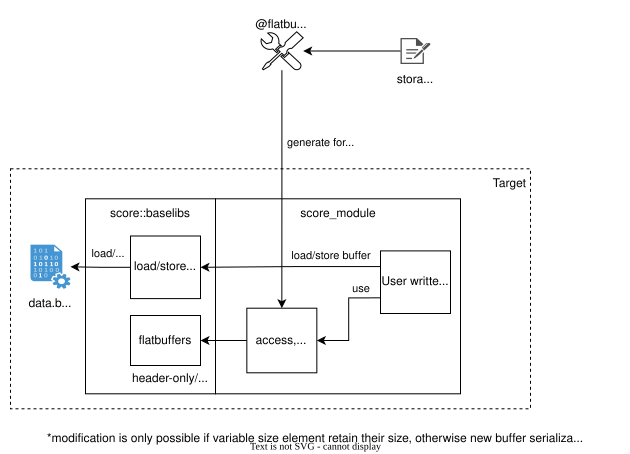
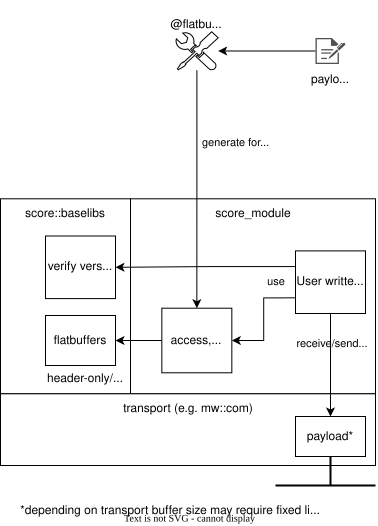

FlatBuffers-Library#
FlatBuffers-Library
|
status: valid
security: YES
safety: ASIL_B
|
||||
Abstract#
This component request proposes the integration of Google FlatBuffers [1] providing
serialization, zero-copy read access, and structural verification of FlatBuffers data, as well as code
generation via the flatc compiler.
FlatBuffers provides zero-copy access, schema validation, and access code generation for C++, Rust,
and further languages. Safety certification covers flatc tool qualification, runtime library verification,
and module-level testing of generated code.
The introduction is proposed for the following use case:
Module configuration: FlatBuffers binary format for read-only configuration scenarios to achieve aggressive start-up time requirements, as it eliminates the need for runtime parsing.
Motivation#
Module-specific configuration is a cross-cutting concern that impacts system startup time and development efficiency. For read-only configuration scenarios, runtime parsing approaches can limit startup performance in time-critical applications.
- The FlatBuffers binary configuration approach addresses these engineering challenges by:
Eliminating the need for runtime parsing to meet aggressive startup time requirements
Providing compile-time type safety through generated access code
Reducing development effort through automated access code generation
Ensuring schema validation at build time
Rationale#
Real-world experience with complex modules (e.g. diagnostics, SOME/IP) demonstrates that read-only configuration scenarios benefit significantly from zero-copy access patterns. For these use cases, FlatBuffers is ideal as it allows zero-copy data access. The schema-driven code generation further accelerates development by providing type-safe access patterns, reducing both implementation effort and the potential for configuration-related runtime errors.
Specification#
The flatc compiler of FlatBuffers [1] generates code for serializing, accessing, and verifying
FlatBuffers binary data.
The FlatBuffers-Library provides features defined in feat_req__baselibs__flatbuffers_library. Note: The FlatBuffers verification mechanism validates structural well-formedness only (e.g. offsets, vtables, field boundaries), not payload data integrity. Therefore, FlatBuffers data integrity (aou_req__flatbuffers__data_integrity) needs to be ensured by the user.
In addition, opt-in common buffer identification functionality is provided to allow identification of a buffer without further schema information. For details, refer to Common Buffer Identification (comp_req__flatbuffers__buffer_identification).
Schema Evolution#
- Backward compatibility is maintained through:
Optional fields for new parameters
Default values for missing fields
Controlled field deprecation
Build Integration#
- Build system integration provides reusable rules for:
Buffer serialization from module-specific schema and provided JSON data
Reverse conversion from binary to JSON for debugging purposes
Supported use cases#
Module configuration#
{kind=link}

config.fbs) define the configuration structure using Interface Definition Language (IDL).flatc compiler generates C++ or Rust access code from these schemas (config.fbs).flatc compiler generates a cross-platform data binary from the schema (config.fbs) and JSON (config.json) input.config.bin without parsing.flatc compiler can convert binary config data (config.bin) back to JSON using the schema (config.fbs) for debugging purposes.Identification and Versioning#
- FlatBuffers binary files do not contain embedded schema information. Schema identification requires:
Embedded version fields in the schema root table
File naming conventions (e.g., config_v1.2.bin)
Future use cases#
Future use cases are not yet in scope and may require extension of the existing module requirements and assumptions of use.
Storage format (read/write/modify)#
{kind=link}

storage.fbs) define the storage structure using Interface Definition Language (IDL).flatc compiler generates C++ or Rust access code from these schemas (storage.fbs).data.bin).data.bin).FlatBuffers is applicable as a storage format when reads significantly outnumber writes and write latency is not time-critical. Serialization rewrites the entire buffer, making it unsuitable for high-frequency write scenarios. Long-lived storage further benefits from schema evolution, allowing stored files to remain compatible across software updates without requiring a format migration step.
Payload format (communication)#
{kind=link}

payload.fbs) define the payload structure using Interface Definition Language (IDL).flatc compiler generates C++ or Rust access code from these schemas (payload.fbs).payload) and transmits it.payload).FlatBuffers is applicable as a payload format when message content is variable or sparse. Unlike fixed-size binary structs, FlatBuffers supports optional fields and unions, making it suitable for heterogeneous or extensible message types where not every field is present in every message. Schema evolution allows sender and receiver to evolve independently across software versions without requiring coordinated redeployment, which is relevant for interfaces with long maintenance lifetimes.
However, each message transmission comes at the cost of serialization, which adds overhead to communication on the sender side.
Backwards Compatibility#
Module configuration: Switching from JSON to FlatBuffers for module configuration is not backwards compatible.
Security Impact#
Module configuration: No change expected when compared to the JSON-based configuration approach.
Safety Impact#
Tool Qualification: flatc compiler qualification is limited to the buffer serialization use case.
Brief qualification is supplemented by module-specific validation.
- Verification Runtime Library: Footprint when excluding verifier/builder classes
C++: 12 headers, ~250 LOC (incl. comments), standard library only
Rust: 11 files, ~150 LOC (incl. comments), core/alloc only (assumes std/serialize features disabled)
Verification Generated Code: Module-level verification is equivalent to handwritten access code verification.
Module testing contributes to flatc tool validation for specific schemas.
Test from configuration data (JSON) to value verification in access APIs.
License Impact#
None. FlatBuffers is licensed under the Apache License Version 2.0.
How to Teach This#
Developer adoption requires practical examples and reusable patterns. The FlatBuffers-Library should provide examples for reference implementations.
Rejected Ideas#
Protocol Buffers: Requires runtime parsing and memory allocation, defeating startup time objectives.
Custom binary formats: Higher development and maintenance overhead compared to proven FlatBuffers ecosystem.
Open Issues#
No open issues identified yet.